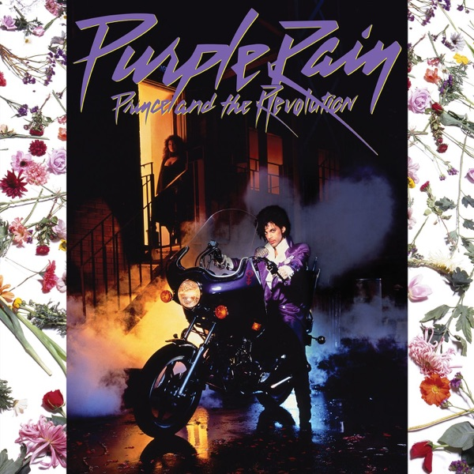

Purple Rain
Prince And The Revolution
Upgrade idea: The 2015 Warner Bros. remaster (catalog R1-25110 recut) or the 2017 Purple Rain Deluxe reissue are sonic upgrades. For the best pressing, look for the 2015 remaster on 180g — noticeably better than this Specialty plant pressing.
- Original release
- 1984
- Pressing year
- 2008
- Country
- US
- Format
- Vinyl LP, Album, Reissue (RTI Pressing,180 Gram)
- Label / Cat#
- Warner Bros. Records – R1 25110
- Genres
- Funk / Soul, Pop, Stage & Screen
- Styles
- Soundtrack, Minneapolis Sound, Pop Rock
- Discogs release
- 2085604
- Discogs master
- 16245
- Apple Music
- Purple Rain
- Wikipedia
- Purple Rain
Production notes
Tracklist (Discogs)
| A1 | Let's Go Crazy | 4:39 |
| A2 | Take Me With U | 3:54 |
| A3 | The Beautiful Ones | 5:15 |
| A4 | Computer Blue | 3:59 |
| A5 | Darling Nikki | 4:15 |
| B1 | When Doves Cry | 5:52 |
| B2 | I Would Die 4 U | 2:51 |
| B3 | Baby I'm A Star | 4:20 |
| B4 | Purple Rain | 8:45 |
Tracklist (Apple Music)
| 1 | Let's Go Crazy | 4:39 |
| 2 | Take Me with U | 3:54 |
| 3 | The Beautiful Ones | 5:13 |
| 4 | Computer Blue | 3:59 |
| 5 | Darling Nikki | 4:14 |
| 6 | When Doves Cry | 5:54 |
| 7 | I Would Die 4 U | 2:49 |
| 8 | Baby I'm a Star | 4:24 |
| 9 | Purple Rain | 8:41 |
Personnel & credits
- Prince — Art Direction
- Brownmark — Bass, Voice
- Laura LiPuma — Design
- David Leonard — Engineer [All Overdubs As Well]
- Peggy McCreary — Engineer [All Overdubs As Well]
- Wendy Melvoin — Guitar, Voice
- Lisa Coleman — Keyboards, Voice
- Matt Fink — Keyboards, Voice
- Kevin Gray — Lacquer Cut By
- Bernie Grundman — Mastered By [Originally]
- Doug Henders — Painting [Dust Sleeve Painting]
- Bobby Z. — Percussion
- Prince And The Revolution — Producer, Arranged By, Composed By, Performer
- David Leonard — Recorded By [At The Warehouse In The Summer Of '83]
- Susan Rogers — Recorded By [At The Warehouse In The Summer Of '83]
- David Leonard — Recorded By [Live At 1st Avenue In The Summer Of '83 By]
- David Rivkin — Recorded By [Live At 1st Avenue In The Summer Of '83 By]
- David Leonhard — Recorded By [Record Plant, New York]
- David Leonhard — Recorded By [Sunset Sound]
- Peggy McCreary — Recorded By [Sunset Sound]
Identifiers
- Barcode: 0 81227-99149 4 (Text)
- Barcode: 081227991494 (Scanned)
- Matrix / Runout: R1-25110-A S-66596 KG ATM (Side A runout, variant 1)
- Matrix / Runout: R1-25110-B S-66597 KG ATM (Side B runout, variant 1)
- Matrix / Runout: R1-25110-A S-66596 KPG@ATM (Side A runout, variant 2)
- Matrix / Runout: R1-25110-B S-66597 KG@ATM (Side B runout, variant 2)
Notes
Sticker on shrink:
Premium Vinyl Pressing
HQ-180®
"RTI" logo. [Record Technology Incorporated]
Includes 4-panel folded insert sheet, with reproduced artwork based on original inner "dust sleeve." The front panel has lyrics and credits, the back panel has the face painting, and the two inner panels are blank.
Record housed in a poly inner sleeve, which may appear slightly purple.
Labels:
© ℗ 1984 Warner Bros. Records Inc. for the U.S.
Title on spine: "Music from the motion picture Purple Rain"
Tracks A1 & A4 were recorded at The Warehouse in the summer of '83.
Tracks A2, A3 & B1 were recorded at Sunset Sound.
Tracks B2, B3, B4 recorded live at 1st Avenue in the summer of '83 & Record Plant, New York.
Track A4 was recorded at a place very close 2 where u live.
Notes & discrepancies
- Release year differs: your pressing=2008, Apple Music edition=1984. Apple Music typically streams the most recent remaster.
One of the greatest albums ever made — Prince’s 1984 masterpiece. Six top-ten singles, Academy Award winner, 24 weeks at #1. 2008 US Rhino reissue (R1-25110) pressed at Specialty Records Corporation (S-66596, Olyphant PA). Decent everyday copy but not the best-sounding pressing available.